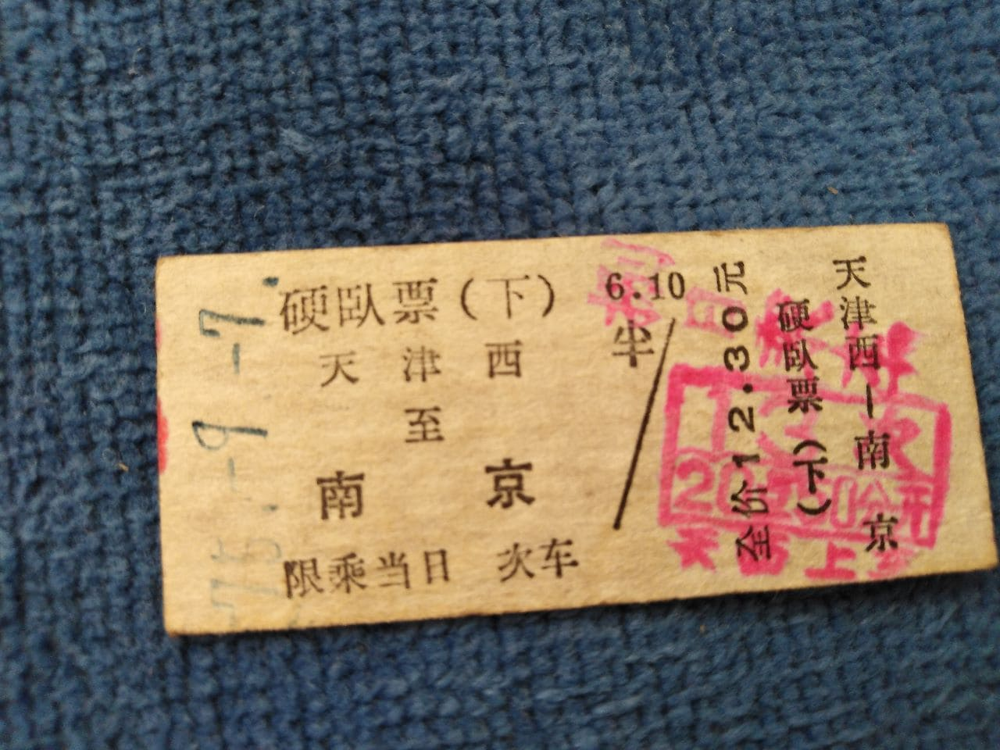

北方的冬天，车站里透着寒意，售票窗口的玻璃上结了一层薄霜。我把手在袖子里搓了搓，继续敲击键盘，打印出一张张火车票，递给窗外等待的旅客。
1975年，我被分配到哈尔滨火车站，成为一名售票员。那时的火车票不是电脑打印的，而是一张张手工填写的纸质车票。每天早上六点，我就要到岗准备，清点票据，核对列车信息，然后开始一天的工作。
窗口前永远排着长队，尤其是在春节前后，队伍甚至绕车站大厅好几圈。有赶回家过年的学生，有探亲的工人，有出差的干部，还有带着大包小包的生意人。我们这三尺票台，连接着千家万户，见证着无数离别与重逢。
"一张小小的车票，承载的是人们的期盼与思念。"
记得有一年冬天，气温降到了零下三十多度。一位年轻母亲带着生病的孩子来买票，要去沈阳看专科医生。队伍太长，孩子在寒风中等不及，病情加重。我注意到后，让他们从工作人员通道进来，优先办理。
"谢谢同志，谢谢同志..."那位母亲眼含泪水，一遍遍地感谢，孩子也冲我露出了虚弱的笑容。
回家后，我跟妻子讲起这件事，她说："你做得对，规则是死的，人是活的。"这句话我记了一辈子，也成为我工作的准则。
八十年代初，我们开始用电脑售票系统，不再需要手写车票。刚开始大家都不适应，经常出错。我比较年轻，学得快一些，就主动加班培训年长的同事。那段时间，我常常工作到深夜，但看到同事们逐渐熟练操作，心里还是很满足。
售票窗口看似简单，其实门道很多。要记住各种列车的时刻表、票价和余票情况；要分清各种证件的真伪；要学会应对各种突发情况。最重要的是，要有耐心，因为每个旅客背后都有一个故事。
有一次，一位老人要买票去北京看望参军的孙子。他拿出一个布包，从里面倒出一堆硬币和皱巴巴的纸币，是他攒了很久的钱。数钱的时候，队伍后面有人开始抱怨。我没有催促，而是耐心地帮他清点，最后还少了十几块钱。
看着老人失望的眼神，我犹豫了一下，然后自掏腰包补上了不足的部分。老人连声道谢，颤抖着手接过车票，眼里泛着泪光。他说："俺孙子两年没回家了，听说立了功，俺得去看看他..."
后来我得知，这位老人的孙子在边境执勤时救了战友，受了重伤。老人千里迢迢去探望，给了孙子莫大的鼓励。再后来，这个小伙子康复后，专程来到车站找到我，送来一面锦旗。那一刻，我知道当初的决定是对的。
"生活不会亏待善良的人，就像列车终将到达它的终点。"
三十多年的售票员生涯，我经历了中国铁路的巨大变革。从手写车票到电脑售票，从绿皮车到高铁动车，从排队购票到网上订票。唯一不变的，是车站里人来人往的身影，是那些充满期待的眼神。
退休那天，同事们给我举办了一个小型欢送会。站长送了我一块刻有工作年限的纪念牌，上面写着："忠于职守三十年，服务旅客无数人"。那一刻，我鼻子一酸，眼泪差点掉下来。
如今，我已退休多年，但每次路过火车站，还是会不自觉地停下脚步，看着人流涌动，恍惚间仿佛又回到了那个三尺票台后忙碌的自己。
那些年，我见证了无数人的旅程，而他们或许不会记得这个默默无闻的售票员。但没关系，能成为他们旅途中的一个小小环节，我已经很满足了。
"不是所有的旅程都留下足迹，但每一段经历都塑造了我们的人生。"